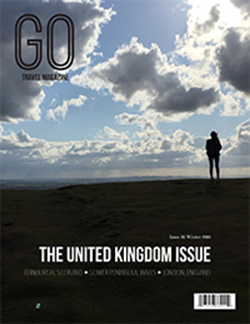

About the class
J463 is the beginning Graphics Design class taught at the Media School at Indiana University by Steve Layton. It meets two times a week for two hours. The class had varying levels of experience coming in but nonetheless we all learned new skills on Adobe InDesign, Photoshop, and Illustrator through several tutorials and in-class exercises to create four different assignments that would put them in practice. Click here to see our class's website!
Newspage

Steve provided us with some images and texts in order to create a standard page one of a newspaper. I had designed newspaper pages before for the Indiana Daily Student and I have pretty good experience with InDesign so this project was pretty straightforward for me. Click on the image to see the full-sized PDF.
Magazine
We were tasked with creating a magazine using InDesign with whatever images we wanted as long as we owned them. I chose to use images from my trips to Scotland and Wales to make a travel magazine called Go. My goal was to make this magazine have a trendy and minimalist feel. I really enjoyed the creative freedom this project provided. Click on the image to see the full spread PDFs I designed for the inside of the magazine.
Poster
This project called for us to design a poster on whatever topic we wanted using Photoshop and Illustrator. I chose to do a minimalist interpretation of the poster for one of my favorite movies An Education. This is the project where I learned the most as far as using new tools and techniques in Adobe programs. Click on the image to see the full-sized PDF.